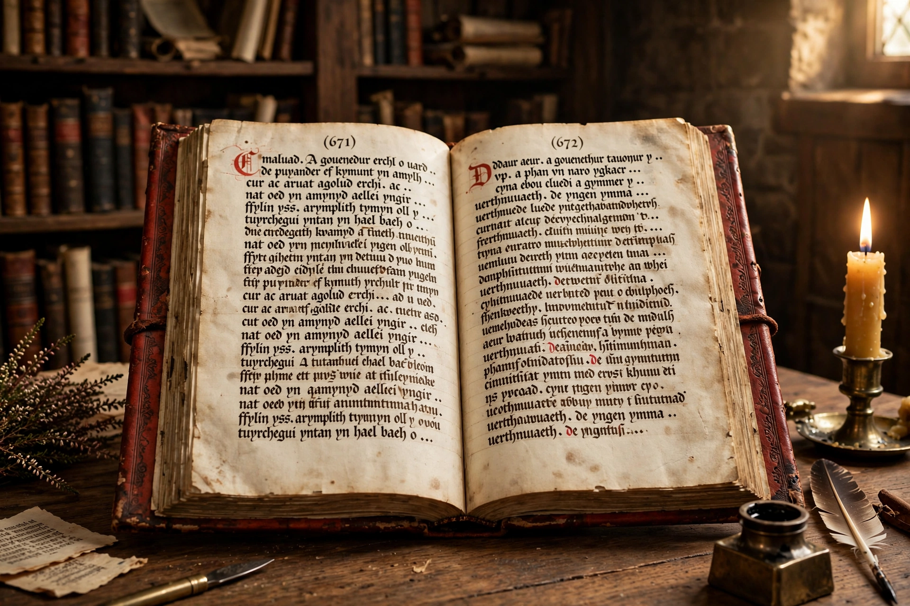

The Red Book of Hergest (Welsh: Llyfr Coch Hergest) is one of the most important medieval Welsh manuscripts, written between about 1382 and 1410. It preserves a large body of Middle Welsh prose and poetry, including the tales known collectively as the Mabinogion, and is now held by the Bodleian Library, Oxford (MS Jesus College 111).

The manuscript contains the Four Branches of the Mabinogi and other native tales, the Welsh Triads, historical chronicles, court poetry by the Gogynfeirdd and later poets, prophetic verse, religious and didactic texts, and a herbal of medical remedies associated with the Physicians of Myddfai. It was the main source for Lady Charlotte Guest's 19th-century translation of the Mabinogion.
The book is named for its red leather binding and its association with Hergest Court in Herefordshire, seat of the Vaughan family. Its chief scribe is thought to be Hywel Fychan fab Hywel Goch of Buellt, working for the patron Hopcyn ap Tomas. It passed to Jesus College, Oxford, around 1701.
Recreated from memory.